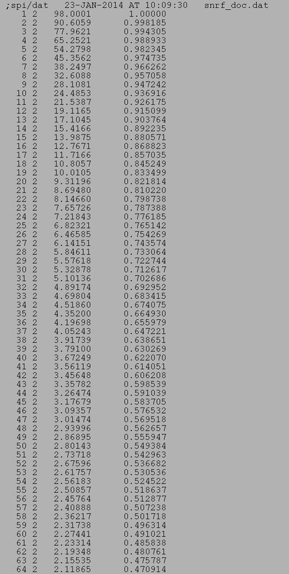

| .OPERATION: | SN RF | ; SNR filter creation |
| .PASS AND STOP FREQUENCIES: | 0.1, 2.0 | ; Pass and stop frequencies |
| .HOW MANY POINTS: | 128 | ; Number of points |
| .RANGE [0,1] OF FSC IS MAPPED TO [FSCMIN:FSCMAX]: | 0.1, 0.98 | ; Range [0,1] that fsc is mapped to [FSCmin:FSCMax] |
| .FACTOR APPLIED ON FSC/(1-FSC): | 2 | ; Factor applied on FSC/(1-FSC) |
| .DOCUMENT FILE: | snrf_doc | ; Filter doc file (output) |
| FILTER DOC FILE (Truncated) |
|---|
|  |
| snrf_doc |